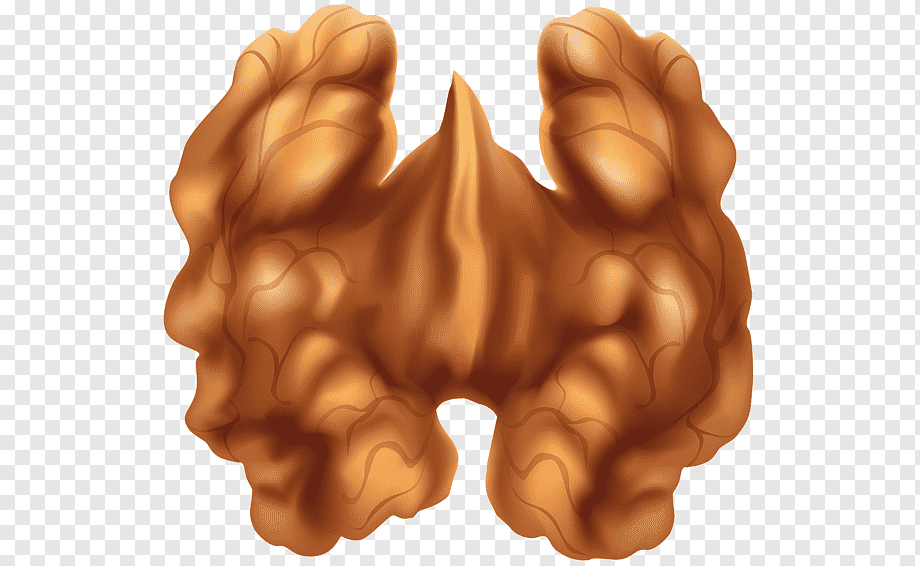

Frozen Desserts — Solo Scoops
Custard base · Wet walnuts · Cuisinart Solo Scoops
Ingredients
Custard
Wet Walnuts
Method
Simmer maple syrup over medium heat for 2–3 minutes, watching closely. Remove from heat as soon as it darkens and foams. Do not leave unattended.
Pour cream into the reduced syrup and add salt. Stir, increase heat to medium-high and bring to a boil. Remove from heat immediately.
Whisk egg yolk in a bowl. Slowly temper with the hot cream mixture a little at a time, whisking constantly. Stir in vanilla powder. Transfer back into the saucepan and cook on medium-low for 2 minutes until it just starts to boil again.
Transfer to a bowl, cool completely stirring occasionally. Press cling film onto the surface and refrigerate at least 3 hours, preferably overnight.
Preheat oven to 135°C. Toast walnuts on a lined baking tray for 15 minutes until golden and fragrant. Cool completely.
Heat maple syrup in a small saucepan until boiling. Stir in toasted walnuts and return to boil. Stir for 10 seconds then remove from heat. Cool completely — they will be wet and sticky.
Turn the Solo Scoops ON first, then pour the chilled custard through the funnel. Churn ~20 minutes.
Add wet walnuts through the funnel 5 minutes before end of churning. Transfer to an airtight container and freeze 3–4 hours. Rest 10 min before serving.
Tips — Use dark or amber maple syrup for the strongest flavour. Watch the reduction closely at this small volume — it can burn quickly. Wet walnuts stay soft even when frozen unlike dry toasted nuts. Never store ice cream in the freezer bowl.